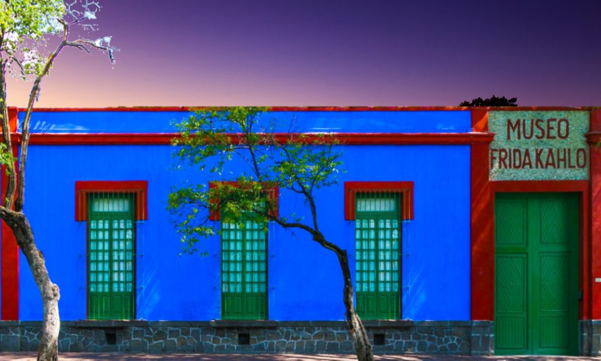

Museo Frida Kahlo
Ciudad de México
El Museo Frida Kahlo, también conocido como la Casa Azul, es un museo ubicado en la ciudad de México, en la casa donde Frida Kahlo nació y vivió gran parte de su vida. El museo abrió al público en 1958, cuatro años después de la muerte de Frida Kahlo.
El museo cuenta con una colección permanente de obras de Frida Kahlo y de su esposo, el muralista Diego Rivera. También alberga exposiciones temporales de otros artistas contemporáneos y ofrece talleres de arte y actividades educativas para niños y adultos.
Algunas de las obras más conocidas de Frida Kahlo que se pueden encontrar en el museo incluyen "Las dos Fridas", "Autorretrato con collar de espinas" y "Viva la vida". También se pueden ver objetos personales de la artista, como su cama, su silla de ruedas y su vestuario.
El museo es un lugar importante para el turismo cultural en la ciudad de México y es uno de los museos más visitados de la ciudad. Se recomienda hacer reservas con anticipación para evitar largas filas en la entrada. Además, el museo ofrece visitas guiadas en varios idiomas para los visitantes que deseen obtener una visión más profunda de la vida y obra de Frida Kahlo.